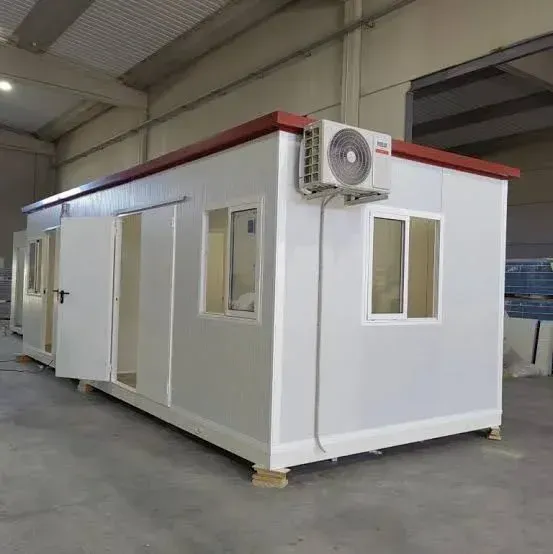
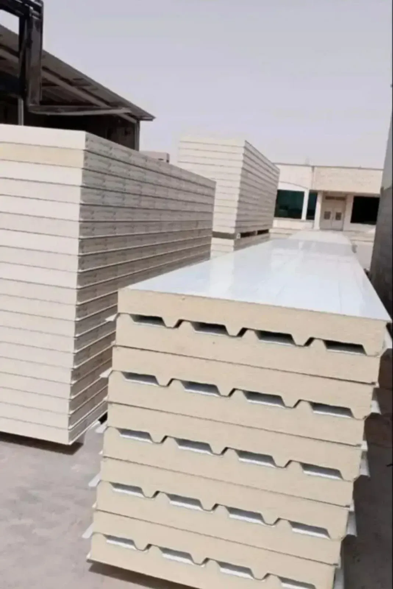
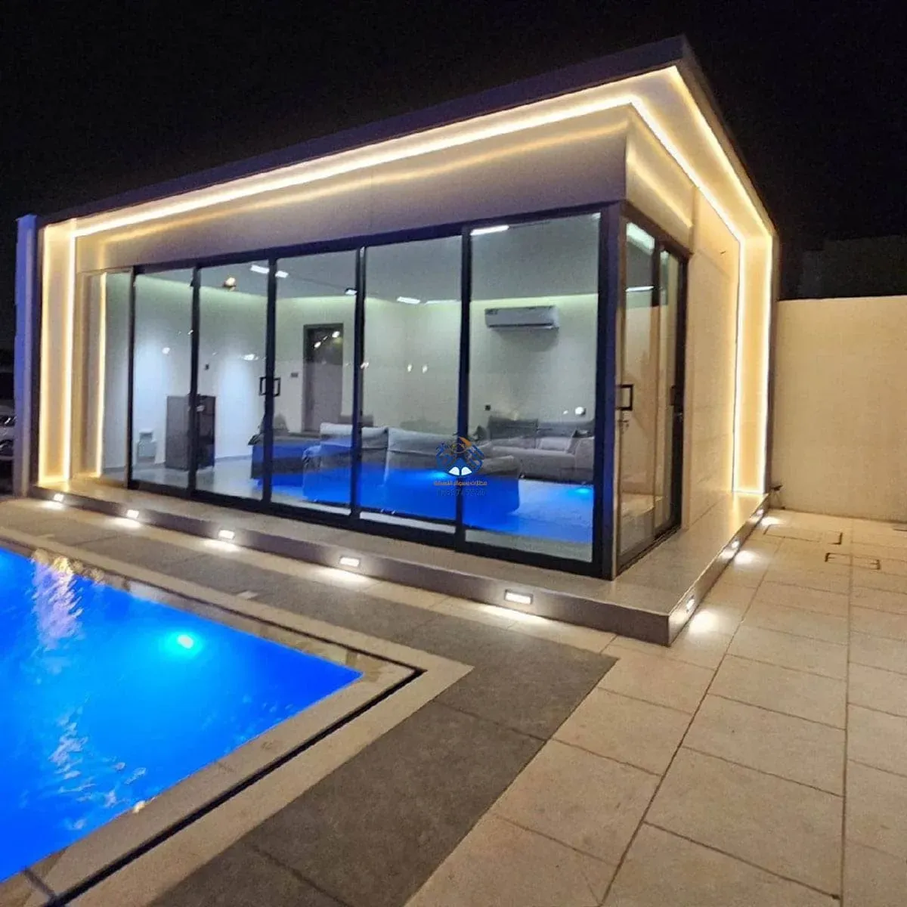

ملحق كامل في أيام، لا أشهر
أكثر ما يميز الساندوتش بانل ليس مظهره النهائي، بل سرعة الوصول إليه. ثلاث طبقات متلاحمة — حديد مجلفن من الخارج، وعازل بولي يوريثان في المنتصف — تعطي عزلًا حراريًا وصوتيًا يوازي أو يتفوق على البناء التقليدي، لكن بجدول زمني أقصر بكثير وبدون الحمل الإنشائي الذي تفرضه الخرسانة على سطح المنزل القائم.
الاستخدامات التي ننفذها
ملاحق وغرف فاخرة
تشطيب داخلي كامل بجبس بورد وسيراميك وإضاءة مخفية، بمظهر لا يوحي بأن الجدران من ألواح مصنّعة.
كابينات وغرف حراسة
حلول سريعة التركيب لغرف الحراسة أو المكاتب المؤقتة في المواقع الإنشائية والتجارية.
ملاحق الأسطح
إضافة غرفة كاملة على السطح دون تحميل زائد على هيكل المنزل، بفضل خفة وزن الألواح مقارنة بالخرسانة.
ملاحق بواجهات زجاجية
دمج الألواح العازلة في الجدران والسقف مع واجهة زجاجية كاملة أو جزئية للإطلالة الخارجية.
خيارات التشطيب المتاحة
- الجدران الداخلية: جبس بورد مدهون بأي لون تختاره فوق طبقة الألواح.
- الأرضيات: سيراميك أو باركيه أو سجاد حسب استخدام الغرفة.
- الكهرباء: تمديدات مخفية خلف الديكور مع إضاءة سبوت لايت حديثة.
- التكييف: فتحات مدروسة مسبقًا لتوزيع تكييف سبليت بكفاءة.



عوامل تحديد السعر
| العامل | أثره على السعر |
|---|---|
| سماكة اللوح العازل | السماكة الأعلى تعني عزلًا حراريًا وصوتيًا أفضل بتكلفة أعلى قليلًا |
| مستوى التشطيب الداخلي | الفرق بين غرفة بسيطة وملحق فاخر بديكور كامل |
| الكهرباء والسباكة | تُحتسب منفصلة حسب عدد النقاط ووجود حمام من عدمه |
| الموقع (أرضي أو سطح) | مواقع الأسطح قد تحتاج ترتيبات نقل ورفع إضافية |
مراحل التنفيذ من المعاينة حتى التسليم
- المعاينة: تحديد الموقع (أرضي أو سطح) والمساحة المطلوبة والاستخدام النهائي للغرفة.
- التصميم: اختيار سماكة اللوح ومستوى التشطيب الداخلي المطلوب.
- التصنيع والتجهيز: تجهيز الهيكل الحديدي والألواح في الورشة.
- التركيب: نصب الهيكل وتثبيت الألواح، ثم التشطيب الداخلي والتمديدات.
- التسليم: فحص نهائي للعزل والتشطيب، وتسليم وثيقة الضمان.
الضمان وخدمة ما بعد البيع
نقدّم ضمانًا يصل إلى 10 سنوات على الهيكل الحديدي والألواح العازلة، ونتابع مع العميل بعد التسليم لمعالجة أي ملاحظة على فواصل الألواح أو التمديدات الداخلية خلال فترة الضمان.
نطاق تغطيتنا بجدة ومكة
ننفذ ملاحق وغرف الساندوتش بانل في جميع أحياء جدة وضواحيها، إضافة إلى مشاريع مستمرة في مكة المكرمة للمنازل التي تحتاج مساحة إضافية سريعة دون انتظار بناء تقليدي طويل.
صيانة ملاحق الساندوتش بانل
نقاط التعشيق بين الألواح هي ما يحدد عمر العزل على المدى الطويل:
- فحص فواصل الألواح (نظام التعشيق) دوريًا للتأكد من إحكام الإغلاق ضد الغبار والحشرات.
- تفقّد السيليكون الحراري عند الزوايا وإعادة تطبيقه عند ظهور تشقق بسيط.
- تنظيف الواجهات الخارجية من الأتربة للحفاظ على مظهر الطلاء الحراري.
- فحص التمديدات الكهربائية والسباكة المخفية خلف الديكور الداخلي بشكل دوري.
أسئلة يتكرر سؤالها حول ملاحق الساندوتش بانل
هل ألواح الساندوتش بانل مقاومة للحريق؟+
نستخدم ألواحًا معالجة بمواد تمنع انتشار اللهب، وهو معيار أساسي في كل ملحق سكني ننفذه.
هل يمكن إضافة حمام داخل ملحق ساندوتش بانل؟+
نعم، مع تأسيس السباكة والعزل المائي اللازم للأرضية لمنع أي تسرب مستقبلي.
كم يستغرق تنفيذ ملحق متوسط المساحة؟+
أيام معدودة بعد اعتماد التصميم، وهو الفارق الأساسي بين هذه التقنية والبناء التقليدي بالخرسانة.
هل الملحق يتحمل الرياح القوية في المواقع المفتوحة؟+
نعم عند تثبيت الهيكل الحديدي الداعم بمرابط صلبة في القواعد أو سقف المنزل القائم.
ما مدة الضمان على ملاحق الساندوتش بانل؟+
نقدّم ضمانًا يصل إلى 10 سنوات على الهيكل الحديدي والألواح العازلة حسب نوع المشروع.
هل يمكن إضافة مطبخ صغير داخل الملحق؟+
نعم، مع تجهيز التمديدات الكهربائية والسباكة المناسبة لنقطة طبخ أو مطبخ صغير حسب التصميم.
هل تختلف تكلفة الملحق الأرضي عن ملحق السطح؟+
نعم، ملحق السطح قد يحتاج ترتيبات رفع ونقل إضافية للمواد، ما قد يضيف بندًا بسيطًا للتكلفة الإجمالية.
كم طبقة عزل في اللوح الواحد؟+
اللوح يتكون من ثلاث طبقات: صاج مجلفن من الخارج، عازل بولي يوريثان في المنتصف، وصاج مجلفن آخر من الداخل.
هل يمكن تكبير الملحق لاحقًا بعد التركيب؟+
في كثير من الحالات نعم، إذا رُوعي ذلك عند التصميم الأولي بترك إمكانية التمديد الإنشائي.
هل ملاحق الساندوتش بانل مناسبة لتخزين الأثاث أو كمستودع صغير؟+
نعم، وهي من أكثر الاستخدامات شيوعًا نظرًا لسرعة التنفيذ والعزل الجيد الذي يحمي المحتويات من الحرارة.
ما الفرق بين سماكة 5 سم و10 سم في اللوح؟+
السماكة الأعلى تعني عزلًا حراريًا وصوتيًا أقوى، وتُفضَّل في الغرف المخصصة للاستخدام اليومي الطويل كغرف النوم أو المكاتب.